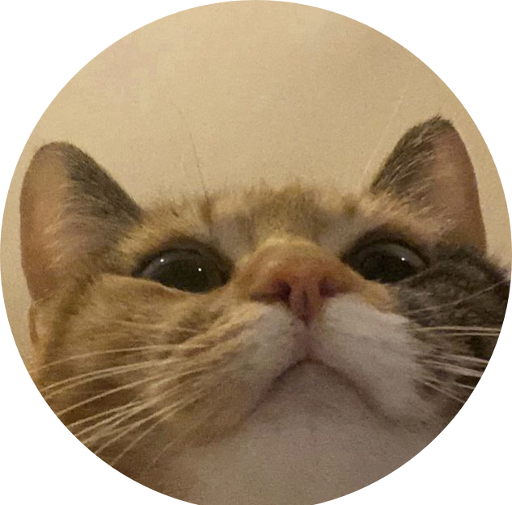

Free Time Finder
A time management app which helps groups organize and schedule events or tasks.
Introduction
Section: 0303 - Team # 1
- Carter Stark

- Max Jih-Vieira

- Zara Baig

- Aminata Kourouma

- Sarah Bamba

- Ethan Bikos

Introduction
Our project centers on the issue of time management and time coordination. In the Who We Are survey for INST362, 57.3% of students stated that time management is their hardest struggle, 28.9% said group coordination, and 38.6% stated keeping up with deadlines. However, time management/coordination is not just an academic issue; planning a day to hangout with friends can be tough when everyone has a busy college student schedule. Our project is aiming to create a quick, user-friendly solution for friends, students, and teams to find a common time to meet.
Problem Statement
People's schedules are all disconnected, so comparing schedules is a hassle for most people, and even with apps like Google Calendar available, the formatting of the app is not ideal for finding gaps in schedules between people, so Free Time Finder will address this problem by orienting its UI to be concise and easy to understand for everyone comparing their schedules.
Research Question
What are we trying to find out?- How do students manage their time?
- What is the best method of coordinating meeting times in groups?
- How do people currently organize their schedules with other people?
What do we need to learn?
- How do students currently plan their time with others?
- What issues do students currently run into when using Google Calendar, group chats, etc.?
Goal
Managing time can be a challenge because schedules become overly crowded due to classes, work, school, and other personal commitments. It also comes with a lot of back and forth messages until you realize when everyone is actually free to meet up, hang out, study, or work on group projects. So our goal is to make a user-friendly tool that will help people better plan and determine when they can be free during the week. From the interviews, we would like to know how people manage their time currently and what time management issues they encounter, like on other platforms. This will help us develop a strong design that will allow users to view their free slots and organize things without all the confusion.
Research
Overview
We will be conducted interviews and sending out a survey to collect data and interact with our target audience. Given how our project is focused on a broad issue, we felt as if it was appropriate to expand our research scope to the general UMD body instead of just INST362 students. We chose to do interviews to get specific descriptive data about how students manage their time, and we added on surveys to gain quantitative numbers for statistical analysis.
Interviews
When conducting interviews, we will be asking questions similar to the following:
- What current methods do you use to schedule events or work?
- How do you currently organize your schedule?
- What is the most difficult part about scheduling with others?
- Specifically, what ideas or systems would you want implemented in a group-planning app?
- Do you have any suggestions or questions for us to take into consideration?
Observation
We also used observation as a method to better understand how students use their current scheduling tools. The observations occurred during the interviews where we would ask them to demonstrate their current apps and websites, and how they interacted with them. This allowed us to physically see what they do rather than simply relying on what they were saying in the interviews.
Surveys
We began by distributing a survey to students through Canvas and by creating a flyer to encourage people to complete. We believed that surveys are an easy way of collecting large amounts of data. The survey consisted of 14 questions. 4/14 of the questions were centered around user statistics to help us understand our audience. 5/14 were to gather insight about their personal time management. The last five questions were geared towards how our respondents schedule plans and the issues surrounding it. We also decided a survey would appropriately help us narrow down our research and prepare for our second method of data collection, interviews.
Reflection
We found that the largest issue students face is not only time management, but planning with others as well. Our research showed that currently used tools are not suitable enough for group collaborations, that time management tools are as effective as the consistency with which the user uses them, and this means that the quality of these tools fails when students are not in the habit of adjusting their schedules frequently. There are still a few unresolved questions regarding the impact of several factors, including extracurricular activities, major, and academic workload, on scheduling problems in a more significant population. We plan to continue to develop our solution, Free Time Finder, delivering a convenient and simple website, allowing users to effortlessly input and designate available times before locating common free time.
Visualizations
Figure 1

Figure 2

Figure 3

Brainstorming
User's Challenge
The problem we are exploring is that people's schedules are all disconnected so comparing them can be frustrating. Even with apps like Google Calendar available, the formatting is not ideal for finding gaps in schedules between people, so Free Time Finder will address this problem by orienting its UI to be concise and easy to understand for schedule comparison by the end of the Spring 2026 semester. Through this project, our goal is to address the 57.3% of students concerned about time management and the 28.9% of students concerned about group coordination. We will have a fully designed semi-functional website that allows users to enter their availability and view overlapping free time in an efficient manner.
Ideas
Below are some ideas we had for Free Time Finder.
- Organize schedules based on groups, can possibly have banners to highlight different groups
- Color gradients to have a visual metric for days of availability (darkest = most availability)
- Drag and drop feature for an easy user interface.
- An option for preference of dates/times. Ex. "I can meet on 4/8 at 8:00pm but wouldn't prefer it."
- Automatic “free” space area that would show spaces that do not have events in them. Could be manipulated to not show specific times like night.
- A notification system that lets users know when their friends availability changes
- Streamlined importing of other calendars (allows you to pick which events to include in the app to share)
- A follow option that lets users follow the people they want to plan hangouts with
- Make certain events pop out more based on priority, could pop out more with 3D effects or bright borders
- An option for meeting time polls for hangouts and group projects.
We chose to use the color gradient idea, because it provides easy information retrieval which was a main point participants of the survey requested.
Sketches

We chose to use the first sketch idea, because it provides a simple visualization which makes it easy for users to see and understand what days their friends or group members are busy.
Hypothesis
We believe that a color gradient-based shared calendar event organization style for UMD students trying to coordinate schedules with their peers will reduce the amount of time students spend coordinating schedules and improve efficiency. We'll know if this is true if we observe fewer complaint/pain point words in our surveys and interviews.
Personas
 Rimuru Tempest
Rimuru Tempest
Role: Team Lead
About: Rimuru is a hard working individual who enjoys hanging out with friends during their free time.
Routine
- Grabs breakfast
- Greets everyone in town
- Works in the lab
- Grabs lunch
- Leads meetings with peers
- Grabs dinner
- Hangs out with friends and relaxes
- Goes to bed
Needs
- A simple interface for scheduling
- Color coded visuals for organization
- See other's availability
- A system for scheduling events ahead of time
Struggles
- Difficult to figure out when peers are free
- Sometimes loses track of time
Goals
- Plan ahead with friends
- Easily see when the next meetings are
- Quickly schedule events with an easy interface
 Diablo
Diablo
Role: Project Manager
About: Diablo is always determined to complete tasks efficiently and perseveres in every job he receives from Rimuru.
Routine
- Grabs breakfast
- Plans meetings
- Grabs lunch
- Works with peers
- Grabs dinner
- Finishes any work left for the day
- Goes to bed
Needs
- Real time schedule data
- An easy system for scheduling meetings
- See other's availability
Struggles
- Difficult to figure out what the best times are to schedule a meeting
- Sometimes runs into schedule conflicts with others
Goals
- Plan ahead for meetings
- Easily see when the next meetings are
- Keep schedules organized
 Gobta
Gobta
Role: Supervisor
About: Gobta enjoys having free time and finding ways to make work more fun. He tends to hang around his friends whenever possible.
Routine
- Grabs breakfast
- Works on porjects
- Checks in on peers
- Grabs lunch
- Works with peers
- Grabs dinner
- Hangs out with friends to relax
- Goes to bed
Needs
- Real time schedule data
- Color coded visuals for organization
- See other's availability
Struggles
- Difficult to figure out everyone else's schedules
- Will often lose track of time
Goals
- Plan ahead with friends
- Easily see when the next meetings are
- Keep schedules organized
Prototype
Home Page


Availability Page


Compare Schedules Page


Settings Page


Details
If you are interested, you can check out the Figma prototype here.
About The Prototype
Our prototype was created using Google Stitch, an AI design tool we used to create a rough visualization of our app. Using insights from our brainstorming, we tried to prompt a prototype that roughly demonstrated what our color heat mapping idea for showing availability would look like. This design feature is meant to provide a visually appealing and information-efficient way of displaying each member of a group's availability to solve the problem of coordinating schedules with other people. Instead of working those details out verbally or through text, we felt that it is a much better method to use color heat mappings. The key features of our prototype are a color coded heat map showing the time availability, a simple interface that does not require constant communications, and the visual comparison of schedules. Our prototype has 4 screens, a homepage, a page showcasing availability, one for schedule comparison, and settings. Each screen is essential to our app design and effectively addresses the problem we aim to solve. One of our features in our prototype shows the real time notification system that we want to incorporate in the app.